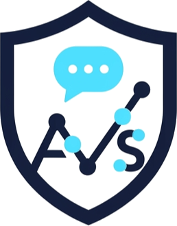

Software
What's the one thing eating your time this week?
Chances are, we've already built the fix. Twenty years watching software succeed and fail - homegrown, enterprise, SaaS - taught us where people actually get stuck: features nobody asked for, subscriptions that punish growth, free trials designed to frustrate you into paying. Each product below targets one specific, real gap, gives you genuine value on the free tier, and only asks you to upgrade when you actually need to.
We listen first, ask the questions that change scope before they change budget, and show you a working prototype - not a status report.
Fixed pricing is available if that's what your budgeting or approval process needs. And testing time is built into every schedule, not squeezed in at the end - especially for anything that automates a process, since an untested automation doesn't remove risk, it just makes mistakes faster.
Workflow Automation
Replace the manual, repetitive process someone on your team dreads doing every week.
AI Agent Implementation
A working AI assistant wired into your actual tools and data, not a demo that stalls after the pitch.
Website Development
A site built to actually convert and rank, not a template with your logo dropped on top.
Custom Dashboards & Reporting
Turn scattered spreadsheets and reports into one decision-ready view, updated automatically.
Internal Tools & Case Management
Intake portals, case tracking, approval flows - the system your team is currently faking with email.
Three problems. Three audiences. One team.
ExportReady scores trade risk for exporters. Contractor Audit Shield tracks worker-classification risk for US businesses. InvoraPro runs quoting and cash flow for contractors. Three genuinely different problems, three different SMB audiences - built by the same team, to the same standard. That range is what "we build solutions" means in practice: whatever your actual problem is, it's probably closer to one of these than you'd guess. Try one.
How we build software
Twenty years in enterprise software taught us what works - and what it gets wrong for a business your size.
Seven rules, three products, one standard - filter by what matters most to you, or scroll through all of them. See them in practice below.
Drop exportready-demo.mp4 into the videos/ folder to show it here.
ExportReady
exportready.cebean.com
Built for
Canadian SMBs overexposed to one market, ready to diversify in 2026 and beyond.
"Diversify" isn't news anymore - Ottawa and the provinces have been saying it since 2025. ExportReady is where you act on it.
Try ExportReady →Assess where you actually stand
A clear current-state read - not a guess - before you spend a dollar on expansion.
Identify the right target market
Matched to your industry and export product, not a generic top-10 list.
Get a 12–24 month roadmap
Built from the recommendations you decide to accept - ready to bring to leadership.
"As a small business owner exploring export for the first time, I don't have time to navigate complex processes. ExportReady was quick, easy to use, and immediately gave me a score with explanation highlighting the gaps in our strategy. It helped me understand what we need to focus on before committing any resources."
"We've been exporting to the US for years, but I tried the ExportReady free assessment to see how prepared we were for other international markets — and it was eye-opening. I didn't realize the significance of the gaps in our operations when it comes to markets beyond the US. We're not ready for broader international expansion yet."
What you get: a clear answer to "are we actually ready to expand," in minutes instead of months - and a prioritized to-do list instead of a vague sense of risk.
ExportReady identifies the target markets worth exploring first, starts de-risking the CUSMA review before it hits your bottom line, and leaves you with a 12–24 month roadmap, a shortlist of trade events, and something real to bring to your leadership team - not another reminder that diversification matters.
- 18 free questions, or a full 45-question assessment for a detailed breakdown
- Risk alerts and a clear export-readiness classification
- A prioritized roadmap with timelines and effort levels
- Direct links to EDC, FITT, BDC, and the Trade Commissioner Service
Drop contractor-audit-shield-demo.mp4 into the videos/ folder to show it here.

Contractor Audit Shield
1099watch.com
Built for
US-based SMBs that hire a lot of 1099 contractors.
The answer to "how exposed are we" before an auditor asks the question - and a paper trail that backs you up if they do.
Visit 1099watch.com →Automatic tracking of contractor independence
Document the factors that establish real independence, continuously - not scrambled together after the fact.
Businesses bracing for an audit
You've heard about a misclassification case in your industry and want your own exposure answered before someone else finds it.
HR, bookkeeping & advisory firms
You manage compliance for multiple clients and need to monitor risk across all of them, not just one.
Contractor Audit Shield was built as automated compliance management - replacing what's still a manual, easy-to-neglect process at most businesses. Misclassifying a contractor is easy to do and expensive to discover late - back pay, penalties, and legal fees add up fast. The tool exists to mitigate that legal and lawsuit risk before it materializes.
- Risk flags and compliance logs across your contractor base
- Supply chain structure and end-client visibility
- Bulk upload and activity tracking for larger teams
In development A UK/IR35-aligned version is currently being built, to extend coverage to cross-border operations.
Drop invorapro-demo.mp4 into the videos/ folder to show it here.
InvoraPro
invorapro.com
Built for
SMBs in trades, freelancers, and independent professionals.
Invoices that go out before you've left the driveway, a system that chases late payers so you don't have to make the awkward call, and recommendations that get sharper the longer it learns your business.
Try InvoraPro →Solo contractors & tradespeople
You're doing the work and the paperwork, and the paperwork always loses.
Small crews juggling multiple jobs
Quotes, invoices, and client sign-offs across more than one job at a time.
Growing trade businesses
You're past the point where a notebook and a spreadsheet can keep up.
InvoraPro was built for contractors who hate the admin side of running a small business and dread overcomplicated software with expensive subscriptions attached to it. It's an AI-driven alternative designed to be simpler, more affordable, and mobile-first: cover the basics well - quoting, invoicing - then add real time-saving features on top, not a feature list nobody asked for. The AI isn't bolted on for a headline, either: it learns your business over time - your past quotes, your recurring clients, what tends to get accepted versus negotiated - and starts surfacing recommendations shaped by your own history, not a generic template.
- Quote and invoice from your phone, fewest clicks possible - 2-click invoicing
- Collect deposits, and categorize expenses with markups applied automatically
- Defaulted terms & conditions on every quote, no drafting from scratch
- Contract intelligence that flags gaps before you sign
- Cash job management and tracking
- Send a quote link via your own chat app if you don't have email set up
- Automated collections for overdue invoices
- AI contract review with plain-English risk flags, and client risk monitoring (Pro)
- Learns from your quote and client history over time - pricing and follow-up recommendations get sharper the more you use it
- Live in the UK, Canada, USA, Australia, and New Zealand
Have a manual process worth automating?
If it's a pattern we haven't built for yet, that's usually where a consulting engagement starts.
Book your free consultation →